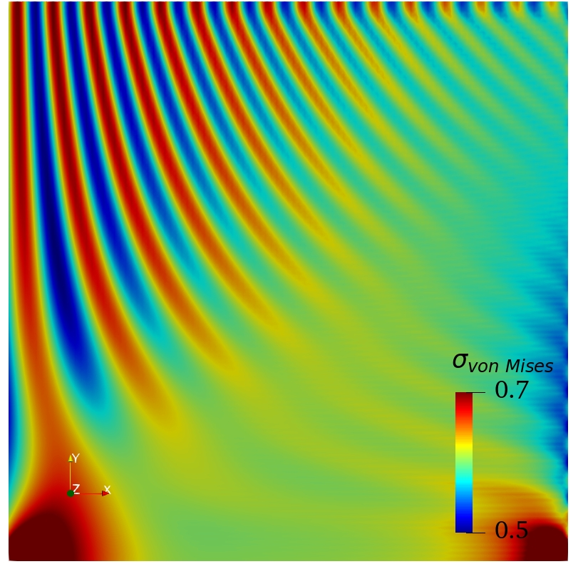

Introduction
In this step, we will try to write our first user-defined-material (UMAT). The equation we used here is still the linear momentum balance equation for the linear elastic problem. For more details, one is referred to step-6.
The user-defined-material (umat)
In this step, we try to define a coordinate-dependent Young's modulus for our simulation, which can be read as follows: $$ \begin{equation} E=E_{0}(1+\delta\cos(xy)) \label{eq:E} \tag{1} \end{equation} $$ with \(E_{0}\) being the constant Youngs modulus, \(\delta\) representing fluctuation. \(x\) and \(y\) are the coordinate.
Write code for your umat-1
AsFem offers several umat(1~10), which means you can easily write your code by editing the cpp file in the src/MateSystem folder. In this case, we will use umat1, then one can open the User1Material.cpp file with whichever text/code editor he/she likes.
Constitutive laws
For the small strain case, one can have $$ \begin{equation} \mathbf{\varepsilon}=\frac{1}{2}(\nabla u+\nabla^{T}u). \label{eq:strain} \tag{2} \end{equation} $$ For the 2D case, one can have:
GradU.SetFromGradU(elmtsoln.gpGradU[1],elmtsoln.gpGradU[2]);
Strain=(GradU+GradU.Transpose())*0.5;
The InputParams variable can access the parameters we provide in our input file as follows:
E0=InputParams[1-1];
nu=InputParams[2-1];
delta=InputParams[3-1];
then we can write out the following code for the Young's modulus list in Eq.\(\eqref{eq:E}\) as follows:
x=elmtinfo.gpCoords(1);
y=elmtinfo.gpCoords(2);
E=E0*(1+delta*sin(x*y));
From elmtinfo, you can get all the information of the local element.
Then we can set up the stress \(\mathbf{\sigma}\) and elasticity tensor \(\mathbb{C}\) as follows:
Jacobian.SetFromEandNu(E,nu);
Stress=Jacobian.DoubleDot(Strain)
That's all? Yup, that's all for your first UMAT.
Solve the problem
Choose the umat-1
Since you have wrote the code for your own material, then you should save the User1Material.cpp file and make AsFem again by running(you should have the Makefile, otherwise, please do cmake CMakeLists.txt):
make -j4
Then, you can tell AsFem to use the User1Material via:
[mates]
[mymate1]
type=user1
params=210.0 0.3 0.2
// E0 nu delta
[end]
[end]
here type=user1 means we will use the material model defined in User1Material.cpp. InputParams will store the params you give in the material block.
Projection for materials
If I want to check the value of the coordinate-dependent Youngs modulus, what should I do?
That's easy, you can define a scalar material as follows:
Mate.ScalarMaterials("MyE")=E;
then in your [projection] block, you can use:
[projection]
scalarmate=MyE vonMises
[end]
Then you will see your "MyE" in the Paraview.
Run it in AsFem
Now, let's try your first umat example in AsFem. You can create a new text file and name it as step7.i or whatever you like. Then copy the following lines into your input file:
[mesh]
type=asfem
dim=2
xmax=10.0
ymax=10.0
nx=100
ny=100
meshtype=quad9
[end]
[qpoint]
type=gauss
order=4
[end]
[dofs]
name=ux uy
[end]
[elmts]
[mysolids]
type=mechanics
dofs=ux uy
mate=mymate1
[end]
[end]
[mates]
[mymate1]
type=user1
params=210.0 0.3 0.2
// E0 nu delta
[end]
[end]
[projection]
scalarmate=MyE vonMises
[end]
[bcs]
[fix]
type=dirichlet
dofs=ux uy
value=0.0
boundary=bottom
[end]
[load]
type=dirichlet
dofs=uy
value=0.02
boundary=top
[end]
[end]
[job]
type=static
debug=dep
[end]
You can also find the complete input file in examples/tutorial/step7.i.
If everything goes well, you can see the following image in your Paraview: 